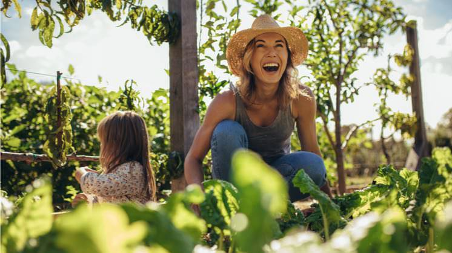

Como adotar um estilo de vida sustentável? Conselhos para aumentar o seu compromisso verde
O que é um estilo de vida sustentável
- Em 1986 a Organização Mundial da Saúde (OMS) definiu o conceito de estilo de vida como “uma forma geral de vida baseada na interação entre as condições de vida em um sentido amplo e os padrões individuais de conduta determinados por fatores socioculturais e características pessoais”. Um ano mais tarde, o Relatório Brundtland, realizado pela Comissão Mundial sobre Meio Ambiente e Desenvolvimento, começou a alinhar estilo de vida e sustentabilidade: "O desenvolvimento sustentável é aquele que satisfaz as necessidades presentes, sem comprometer a capacidade das gerações futuras de suprir suas próprias necessidades."

Dicas para adotar hábitos susustentáveis
- A já mencionada Agenda 2030 é um plano ambicioso que busca alcançar uma prosperidade que respeite o planeta e seus habitantes. Seus 17 ODS, especialmente o ODS 12, que inclui medidas relativas ao consumo responsável e à produção e gestão sustentável dos recursos naturais, trazem recomendações sobre o que fazer e como agir para ter um estilo de vida sustentável. Em qualquer caso, o primeiro passo é rever nossa forma de vida e começar a introduzir mudanças para gerar hábitos sustentáveis. A seguir, elencamos os mais relevantes: